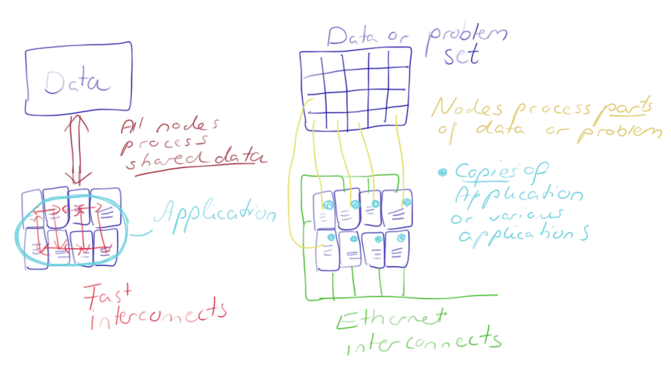

Module 4
From PC to Cloud or HPC
Sections of this module:
IntroductionHPC vs Cloud computing
When to use HPC
When to use the Cloud
The Cloud - Pros and Cons
Summary
View all sections on one page (Printer friendly)
HPC vs Cloud computing
High Performance Computing (short: HPC) is not the same as cloud computing. Both technologies differ in a number of ways, and have some similarities as well.
We may refer to both types as “large scale computing” – but what is the difference? Both systems target scalability of computing, but in different ways.
HPC targets extremely large sets of data and crunching the information in parallel while sharing the data between compute nodes (you can think of a “node” as a computer). The data connection between the nodes has to be very fast (typically, Infiniband technology is used), essentially turning the entire grid of nodes into one single “supercomputer”. This requires expensive hardware: nodes with individually high performance, i.e. high processing power and large memory, and very fast network connections between nodes. One application can be run across a variable number of nodes. We call this vertical scalability.
Cloud computing on the other hand targets “embarrassingly parallel problems” (EPP). An embarrassingly parallel problem is one for which little or no effort is required to separate the problem into a number of parallel tasks. This is often the case where there exists no dependency (or communication) between those parallel tasks. A common EPP problem is one in which a very large data set is chopped into pieces which are dispatched to various computers for processing; or, several copies of a smaller data set are distributed across computers to perform different computations on it (e.g. running the application with different parameters). After the processing is finished, the resulting data is re-assembled or the results from all computers summarized. The individual computers don’t have to be super fast, but instead the power lies in having a huge number of computers. Several applications (or, copies of the same application) run on several nodes. We call this horizontal scalability.


The main point of horizontal scalability (in cloud computing) is that data and the same application are replicated across the computers. This can be done do perform calculations, or merely to replicate the same application / data in order to ensure availability.
In contrast, with vertical scalability (in HPC) there is only one instance of the application; replicating it does not improve performance. Instead, the application itself works in a distributed way over multiple instances: one single application uses hundreds or even thousands of cores and accesses the data on a storage entity that is attached via the fast network to all the nodes.
Bernhard Schott, CTO of VCODYNE and formerly project manager on distributed complex systems at Platform Computing, describes the difference between horizontal and vertical scaling in terms of a schoolyard.
“If you have 200 school kids and want each of them to pick a piece of paper off the floor, that’s a perfectly parallel problem [an EPP] that scales really well, like in the cloud. If you want to coordinate those children to perform together in the same ballet, you have a whole new set of problems, and it doesn’t scale well”
So HPC and Cloud Computing try to achieve a different type of scalability. To achieve their aim, both techniques use their own optimized hardware. Depending on the requirements of your research application, one or the other may be the better solution.
Some providers also offer HPC systems in the Cloud. HPC requires specialized hardware, so the provider must have such a specialized system as part of their infrastructure. Usage of HPC in the Cloud then works just as using HPC systems which your University may provide, only that the HPC System is located at the Cloud providers infrastructure instead of at your Universities data center.
Amazon, for example, offers HPC in the Cloud, as does eResearch South Australia.

 This work is licensed under a
This work is licensed under a